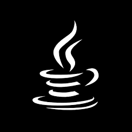
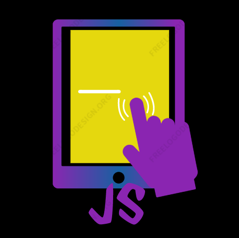
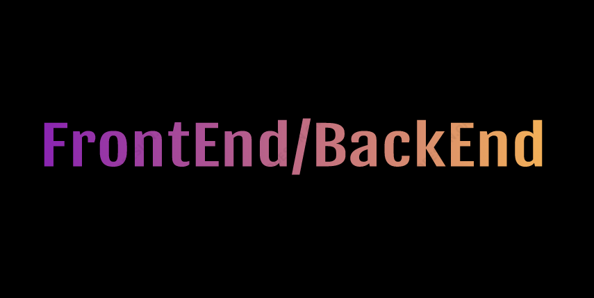
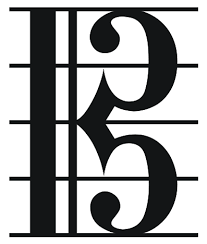

Pau Garcia Valero
FullStack Developer
Qui soc?

Soc alumne en ultim curs del Grau Universitari de Tecniques d'Aplicacions Software
Em considero una persona amb gran compromis per el treball que desenvolupo, amb una gran actitud i treball en equip
Aspiro a poder desenvolupar grans projectes en la meva carrera professional, en poder creixen en aquest aspecte i en poder creixer com a persona
Habilitats que he desenvolupat





Projectes que he realitzat
Desenvolupament de projectes: Realització d'una aplicació d'escriptori amb Electron, HTML, CSS, JS i JavaSpringProgramacio orientada a objectes Realització d'un programa que permet la busqueda de serveis i negocis programat en Java
Serveis en linia: Realitació d'una API REST, desde on es gestionen trucades a endpoints, la integritat de les dades y la gestió d'errors, programat amb NodeJS
Algorismica Avançada: Realització, estudi i rendiment d'un algoritme capaç de pintar les regions d'un tauler amb certes restriccions, programat en Java
Desenvolupamtn de dispositiiu movils Andriod: Realitazió d'una aplicació Andriod d'events d'un club de motos, programat en Java
Desenvolupament de dispositius movil IOS: Creació d'una aplicació sobre viatges, amb funcionalitat com GPS, guardar dades, i compovar el temps en la ciutat actual, programat amb Swift
Eines per el suport al desenvolupament: Realitació del joc BlackJack, programat en C
Sistemes operatius: Creació d'un sistema de communicació entre diferentes màquines, on es poden enviar missatges
Desenvolupament en entorns web Desenvolupament d'un joc a traves d'una API proporcionada, programada amb JavaScript, HTML i CSS
Els meus hobbies
Com a curiositat, per saber una mica més de la meva persona, practico i sòc un gran seguidor del basket
També he estudiat musica durant més de 10 anys, i sé tocar la Viola


Aqui el deixo el meu CV per a que el puguis veure